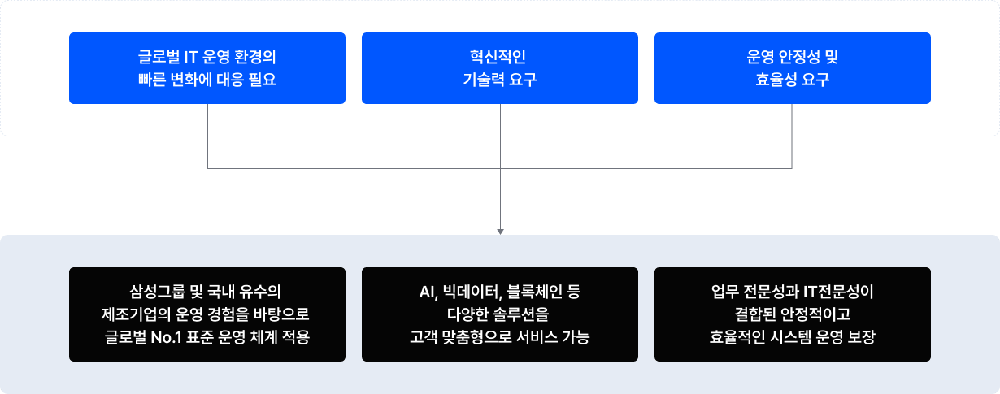
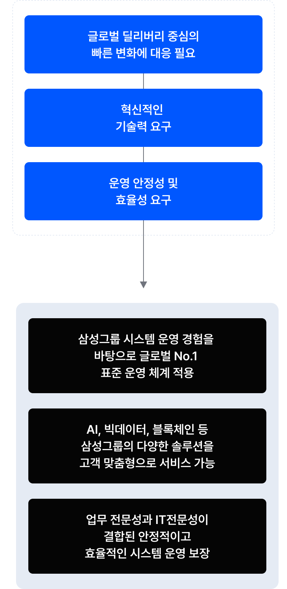
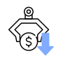
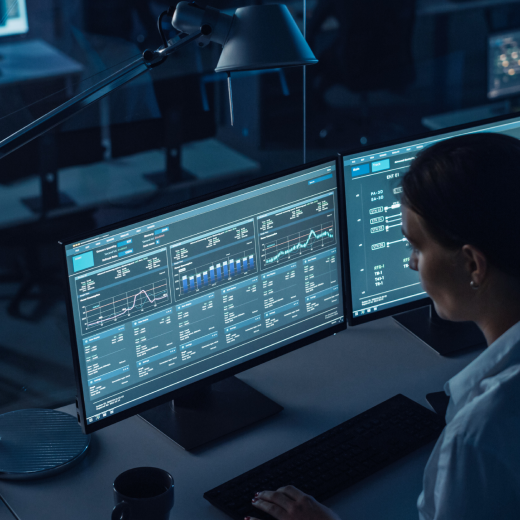
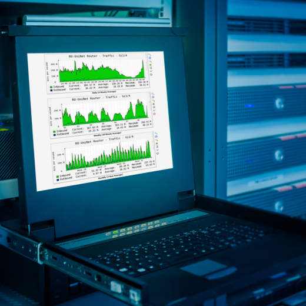

@@include('./pages/includes/head.html', {
pageTitle : 'IT 운영 (ITO) | 서비스 - 미라콤아이앤씨',
ogTitle: 'IT 운영 (ITO) | 서비스 - 미라콤아이앤씨',
ogDesc: '삼성그룹 및 제조기업에서 축적한 다양한 업종 전문성과 글로벌 IT 기술력을 통하여 시스템 분석, 개발, 운영 등 IT 아웃소싱 서비스를 제공합니다.',
metaDescription: '삼성그룹 및 제조기업에서 축적한 다양한 업종 전문성과 글로벌 IT 기술력을 통하여 시스템 분석, 개발, 운영 등 IT 아웃소싱 서비스를 제공합니다.',
metaKeywords: 'Miracominc,miracom,미라콤아이앤씨,미라콤,IT운영,IT,운영,스마트팩토리,smartfactory,ITO,시스템분석,시스템설계,시스템개발,시스템운영,애플리케이션,인프라,보안,장애분석',
ogUrl: 'https://miracom-inc.com',
ogImage: '../../assets/images/og/miracom-og.png',
ogType: 'article',
cssPath : '../../assets/css/common.min.css'
})
@@include('../src/pages/includes/header.html', {
type : 'sub-type',
gnb : true,
subDepth: true,
subArr : ['미라콤아이앤씨', '서비스 및 솔루션', 'IT 운영 (ITO)']
})
서비스 및 솔루션
IT 운영 (ITO)
삼성그룹 및 국내 유수의 제조기업에서 축적한 다양한 업종 전문성과 글로벌 IT 기술력을 통한 고객 중심의 IT Outsourcing 서비스
필요성
체계적인 IT운영과 비용 절감을 위한 ITO 서비스 필요

글로벌 IT 운영 환경의 빠른 변화에 대응 필요, 혁신적인 기술력 요구, 운영 안정성 및 효율성 요구, 삼성그룹 및 국내 유수의 제조기업의 운영 경험을 바탕으로 글로벌 NO.1 표준 운영 체계 적용, AI, 빅데이터, 블록체인 등 다양한 솔루션을 고객 맞춤형으로 서비스 가능, 업무 전문성과 IT 전문성이 결합된 안정적이고 효율적인 시스템 운영 보장

글로벌 IT 운영 환경의 빠른 변화에 대응 필요, 혁신적인 기술력 요구, 운영 안정성 및 효율성 요구, 삼성그룹 및 국내 유수의 제조기업의 운영 경험을 바탕으로 글로벌 NO.1 표준 운영 체계 적용, AI, 빅데이터, 블록체인 등 다양한 솔루션을 고객 맞춤형으로 서비스 가능, 업무 전문성과 IT 전문성이 결합된 안정적이고 효율적인 시스템 운영 보장
서비스 개요
미라콤아이앤씨는 삼성그룹 전기·전자, 금융, 기계·부품, EPC·건설, 화학·에너지, 유통·서비스 등 글로벌 No.1 트렌드를 따라가며 운영 업무를 통해 확보된 다양한 경험과 노하우를 바탕으로 다양한 제조기업에 맞춤형 IT 서비스를 제공합니다.
시스템 분석/설계
고객 비즈니스 프로세스 변경에 따른 요구사항을 분석하고, 이에 기반한 최적의 시스템 아키텍처 및 어플리케이션 설계 서비스를 제공합니다.
시스템 개발/테스트
표준화된 방법론에 의거하여 개발/테스트를 수행하여 시스템의 품질을 향상시키고, Case별 테스트 시나리오에 따른 Defect Zero를 지향합니다.
시스템 운영/개선
비즈니스 환경변화에 능동적으로 대응하여 모니터링 및 기능 개선 등 최적의 시스템 성능 유지를 통한 효율적인 운영 서비스를 제공합니다.
특장점
Point 1.
IT 전문성과 운영 노하우
선진 BP*를 다양한 제조 기업에 확산하여 고객 업무에 최적화된 프로세스 및 시스템 혁신을 지원합니다.
*BP : Best Practice(모범 사례)
Point 2.
각 업종에 필요한 글로벌 IT 서비스 역량
전기/전자, 제조, 부품, 금융, 서비스 등 11개 이상 업종과
해외법인 업무 프로세스 경험을 바탕으로 애플리케이션, 인프라, 보안 등
전문적인 ITO 서비스를 제공합니다.
Point 3.
현장 운영부터 원격 운영까지 맞춤형 서비스
고객사의 상황에 따라 현장 운영을 수행하며 특히 모니터링, 장애 분석, 기능 업데이트 등 MES, ERP 원격 운영 서비스를 맞춤형으로
제공합니다.
고객 혜택
고품질 IT서비스
세계적인 표준 ITIL* 체계와 고객 상황에 맞는 운영 프로세스를 기반으로 고품질의 운영 서비스를 제공합니다.
*ITIL : IT Infrastructure Library (정보 기술 인프라 라이브러리)
IT 운영 비용 절감 및 아웃소싱 서비스
Dedicated, Shared, Hybrid 운영 등 다양한 IT운영 방식을 제공하여
비용 절감이 가능합니다.
자체 IT운영 인력 및 기술력 확보가 어려운 기업에 전문적인 운영 서비스를
제공합니다.

비즈니스의 연속성 확보
인프라 아키텍처 신기술 도입과 주기적인 하드웨어,
소프트웨어 업그레이드로 비즈니스 성과를 극대화할 수 있습니다.
최고 수준의 보안 서비스
글로벌 수준의 보안을 관리해온 경험을 바탕으로 시스템을 안전하게 사용할 수 있습니다.
구축 사례

글로벌 No.1 건설 중장비 부품 제조기업인 고객사는 수입/출하와 핵심 공정에 대한 물류 관리를 위해 미라콤 MES 솔루션을 구축하였습니다. 구축 이후 고객사가 직접 MES 시스템을 유지보수하는 것보다 스마트팩토리 ICT 전문 기업에 운영 서비스를 맡기는 것이 비용과 인력 측면에서 효율적이라 판단하여 미라콤의 원격운영 모니터링 서비스를 도입하였습니다. 시스템 가동 현황을 모니터링하면서 고객사 디스크 I/O 과점유 이상 증상을 감지하여 원인분석 및 해결책을 제안하였습니다. 고객사 IT 담당자가 문제 시간대의 트래픽 증가 원인을 제거하고, 생산 중단의 문제가 없도록 빠르게 해결하여 MES 서비스 품질 안정화를 이룰 수 있었습니다.

국내 1위 반려동물 푸드 기업인 고객사는 세계 최고 수준의 최첨단 사료 생산 공장을 확보하여 글로벌 반려동물 용품 선도기업으로의 위상을 정립하고자 스마트팩토리를 구축하였습니다. 구축 이후 체계적인 운영을 위해 미라콤에 유지보수 서비스를 요청하였고, 시스템 가동 현황 모니터링을 통해 고객사에 DB서버 테이블 스페이스의 용량 부족을 알렸습니다. 미라콤 담당자가 테이블 스페이스 확보 방안을 제안하였고, 고객사에서 스토리지 증설, DB서비스 마운트, 테이블 스페이스를 확보하여 안정적으로 MES 시스템을 운영할 수 있었습니다.
이차전지 핵심 소재 기업인 고객사는 공정의 다변화에 따라 MES 시스템 기능을 수시로 개선할 필요가 있었습니다. 따라서 미라콤의 원격운영 서비스를 통해 수시로 기능과 프로그램을 개선하고자 하였습니다. 고객사는 공장 운영 업무 수행 중 추가로 요구되는 업무에 따라 엔지니어링 데이터 상세 조회 기능 구성 및 LOT 수량 변경 기능 개발, RMS* 기능 개선 등의 기능 개선을 통합 VOC 시스템을 통해 손쉽게 요청하였고, 미라콤에서는 실시간 대시보드를 통해 진행상황을 빠르게 확인할 수 있도록 하여 고객과의 신뢰를 유지하면서 요구사항을 지연없이 처리할 수 있었습니다.
*RMS : Recipe Management System
글로벌 복합소재 부품 기업인 고객사는 각 공장에 미라콤 MES 시스템을 도입한 후 글로벌 수준의 경쟁력을 갖추기 위해 MES를 재구축하였습니다. 공장 운영자의 편의를 위해 화면 UI 기능 개선과 필요한 프로그램을 신규로 개발할 필요가 있어 미라콤 원격운영 개선 서비스를 요청하였습니다. MES 코어 UI 품목 공정별 검사 항목과 레시피별 제품 연결 화면에서 디테일한 내용을 확인할 수 있는 기능과 신규 컬럼 추가를 요청해 고객의 요구사항을 빠르게 반영하여 고객 만족도를 높일 수 있었고, 이러한 신뢰 관계가 쌓여 고객사와 스마트팩토리 고도화 사업을 지속적으로 진행하고 있습니다.